CSS进阶和Sass学习笔记（Advanced CSS and Sass）
英文视频教程：https://www.bilibili.com/video/BV1n94y1o7yS
代码框架仓库：https://github.com/jonasschmedtmann/advanced-css-course
开发环境
vscode、浏览器
vscode插件：Emmet、color hightlight
第一部分
知识点：渐变、伪类、伪元素、动画、CSS解析原理、级联（CSS冲突）、相对单位、强制继承、定位、Sass、Sass文件架构、变量、嵌套、混入、函数、拓展、剪辑、背景剪辑、响应式设计、网格布局、变换、兄弟元素选择器、子一代元素选择器、变换、视频背景、图片滤镜、背景滤镜、Sass颜色函数、媒体查询、响应式图像、渐变、calc函数、透视、形状、纯色渐变、光标、堆叠
速查手册
transform
x1/* Keyword values */2transform: none;3
4/* Function values */5transform: matrix(1.0, 2.0, 3.0, 4.0, 5.0, 6.0);6transform: translate(12px, 50%);//位置偏移7transform: translateX(2em);8transform: translateY(3in);9transform: scale(2, 0.5);//按XY方向拉伸10transform: scaleX(2);11transform: scaleY(0.5);12transform: rotate(0.5turn);13transform: skew(30deg, 20deg);//按XY轴翻转14transform: skewX(30deg);15transform: skewY(1.07rad);16transform: matrix3d(1.0, 2.0, 3.0, 4.0, 5.0, 6.0, 7.0, 8.0, 9.0, 10.0, 11.0, 12.0, 13.0, 14.0, 15.0, 16.0);17transform: translate3d(12px, 50%, 3em);18transform: translateZ(2px);19transform: scale3d(2.5, 1.2, 0.3);20transform: scaleZ(0.3);21transform: rotate3d(1, 2.0, 3.0, 10deg);22transform: rotateX(10deg);23transform: rotateY(10deg);24transform: rotateZ(10deg);25transform: perspective(17px);26
27/* Multiple function values */ 28transform: translateX(10px) rotate(10deg) translateY(5px);//多个变换必须一次指定，中间没有逗号29
30/* Global values */31transform: inherit;32transform: initial;33transform: unset;34
图形函数
图形函数https://developer.mozilla.org/zh-CN/docs/Web/CSS/basic-shape
xxxxxxxxxx321/* Keyword values */2clip-path: none;3
4/* <clip-source> values */5clip-path: url(resources.svg#c1);6
7/* <geometry-box> values */8clip-path: margin-box;9clip-path: border-box;10clip-path: padding-box;11clip-path: content-box;12clip-path: fill-box;13clip-path: stroke-box;14clip-path: view-box;15
16/* <basic-shape> values */17clip-path: inset(100px 50px);18clip-path: circle(50px at 0 100px);19clip-path: ellipse(50px 60px at 0 10% 20%);20clip-path: polygon(50% 0%, 100% 50%, 50% 100%, 0% 50%);21clip-path: path('M0.5,1 C0.5,1,0,0.7,0,0.3 A0.25,0.25,1,1,1,0.5,0.3 A0.25,0.25,1,1,1,1,0.3 C1,0.7,0.5,1,0.5,1 Z');22
23/* Box and shape values combined */24clip-path: padding-box circle(50px at 0 100px);25
26/* Global values */27clip-path: inherit;28clip-path: initial;29clip-path: revert;30clip-path: revert-layer;31clip-path: unset;32
开始网站
下载源码
使用git
xxxxxxxxxx11git clone git@github.com:jonasschmedtmann/advanced-css-course.git重置浏览器CSS
xxxxxxxxxx151/* 重置浏览器的填充，取消盒子模型的填充 */2 *{3 margin:0;4 padding:0;5 box-sizing:border-box;6 }7
8 /* 字体的属性通常是继承的 */9 body{10 font-family: "Lato",sans-serif;11 font-weight: 400;12 font-size: 16px;13 line-height: 1.7;14 color: #777;15 }
背景设置
渐变
xxxxxxxxxx61background:linear-gradinent([to 方向 [方向]],颜色,颜色)2background:linear-gradinent(角度 deg,颜色,颜色)3/*多种颜色*/4
5/*设置渐变的中心点*/6background:linear-gradinent(颜色,50%,颜色)
剪辑
xxxxxxxxxx141.header{2 height: 95vh;3 background-image:4 linear-gradient(5 to right bottom,6 #6fc2d5bc,7 #2888b42f),8 url(../img/hero.jpg);9 background-size:cover ;10 background-position: top;11 position: relative;12
13 clip-path: polygon(0 0,100% 0,100% 80%,0% 100%);14 }文本设置
动画
xxxxxxxxxx361.text-box{2 position: absolute;3 top:45%;4 left:50%;5 transform: translate(-50%,-50%);6 text-align: center;7 }8 .heading-primary{9 color: #fff;10 text-transform: uppercase;11 margin-bottom: 20px;12 backface-visibility: hidden;13 }14 .heading-primary-main{15 display: block;16 font-size: 60px;17 font-weight: 400;18 letter-spacing: 35px;19
20 animation-name: moveInLeft;21 animation-duration: 1s;22 animation-timing-function: ease-out;23 /* animation-delay: 0s;24 animation-iteration-count: 1; */25 }26
27 @keyframes moveInLeft{28 0%{29 opacity: 0;30 transform: translateX(-80px);31 }32 80%{33 opacity: 1;34 transform: translateX(10px);35 }36 }按钮设置
伪类
伪元素
进入动画
xxxxxxxxxx441
2.btn:link,.btn:visited{3 text-decoration: none;/*去掉下划线*/4 padding:10px 40px;5 display: inline-block;6 border-radius: 100px;/*放一个超出的*/7 position: relative;8}9.btn:hover{10 transform: translateY(-3px);11 box-shadow: 0 10px 20px rgba(0, 0, 0, 0.3);/*x偏移 y偏移 模糊量*/12}13.btn:active{14 transform: translateY(-1px);15 box-shadow: 0 5px 10px rgba(0, 0, 0, 0.3);16}17.btn-white{18 background-color: #fff;19 color:#777;20}21.btn::after{22 content:"";/*必须指定，可以指定空*/23 display:inline-block;24 width: 100%;25 height: 100%;26 border-radius: 100px;27 position: absolute;28 top:0px;29 left: 0px;30 z-index: -1;31 transition: all .4s;32}33.btn-white::after{34 background-color: white;35}36.btn:hover::after{37 transform: scale(2);38 opacity: 0;39}40.btn-animated{41 animation: moveInBottom .5s ease-out .75s;42 /* 动画名 持续时间 计时函数 延迟时间 */43 animation-fill-mode: backwards;44}CSS背后原理
现代网站设计原则
现代网站设计原则：响应式设计、编写可维护和可拓展的代码、网络性能
响应式设计：在所有尺寸和分辨率的屏幕上良好显示。

加载页面过程
加载HTML，解析HTML生成DOM，解析CSS生成CSSOM，生成渲染树，生成格式化视图模型，显示内容
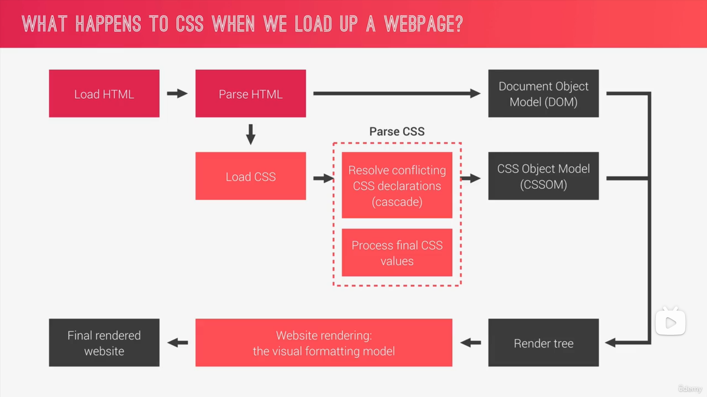
CSS解析过程
CSS声明内容
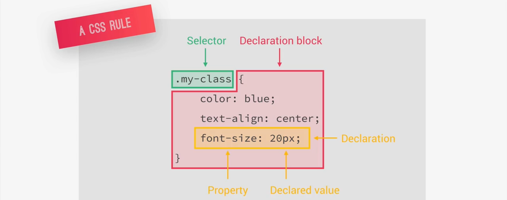
1 解决CSS冲突（级联）
来源：作者声明，用户声明，浏览器声明
级联工作原理
根据声明的重要性：用户重要声明、作者重要声明、作者声明、用户声明、浏览器默认声明
根据选择器的特异性：内联样式、ID、类/伪类、元素/伪元素
根据声明的顺序：如果前面的比较均一致，则最后一个声明生效

设计技巧
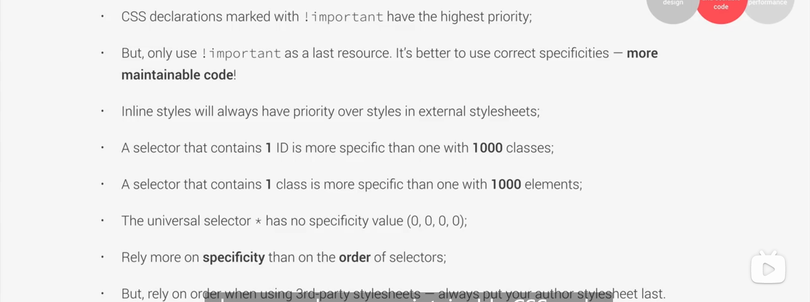
2 处理CSS值
使用相对单位，最终需要转换成px
处理流程
声明值，级联值，指定值（没声明就是 初始值），计算值，使用值，实际值


相对单位转换

要点

继承
没有级联值时就考虑是否能够继承，继承的不仅是声明，还有计算值
如果不能继承（如padding）就用初始值
- 一般，文本相关的属性（行高、颜色、字体）是继承的，其他属性不是继承的
- 可以用inherit关键字强制继承
- 可以用innitial关键字强制使用初始值

回到网站
使用相对单位rem
设置html根字体
xxxxxxxxxx31 html{2 font-size: 62.5%;/*改成10px便于计算,或者%允许用户修改*/3 }IE9-不支持rem
强制继承
对一些默认不继承的属性，加inherit
xxxxxxxxxx61*{2 box-sizing:ingerit;3}4body{5 box-sizing:border-box;6}
继续背后原理
渲染阶段
CSS视觉格式化模型
1,盒子模型
- 内容
- 填充
- 边框
- 边距
- 填充区域

如果不指定宽度和高度，会根据盒子模型的内容计算宽度和高度；

指定宽度/高度，填充和边框将被添加。
使用bix-sizing
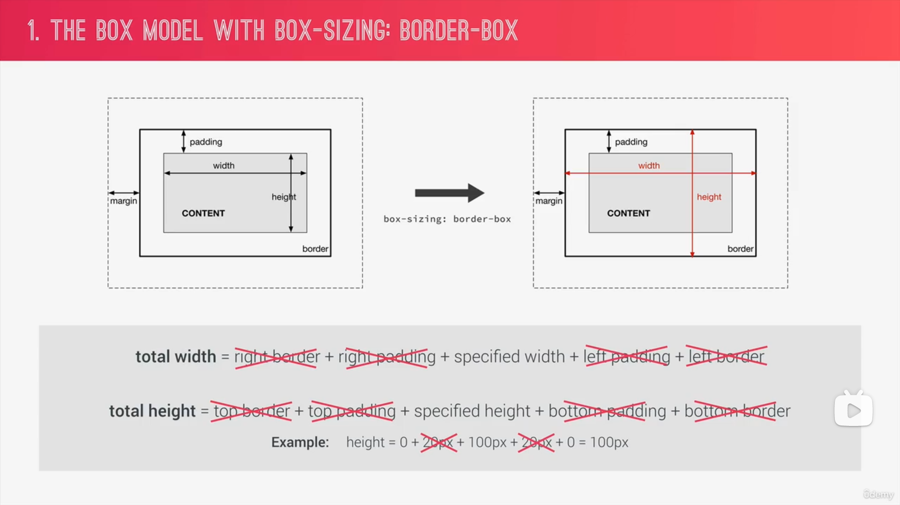
2, box类型
block、inline、inline-box

3, 定位方式
正常

4 堆叠上下文
决定内容元素在页面呈现的顺序，底部的先，顶部的晚
z-index属性
除此之外，不同透明度、一个转换、过滤器或者其他属性将创建新的新的堆叠上下文
架构CSS
模块化、复用性
架构
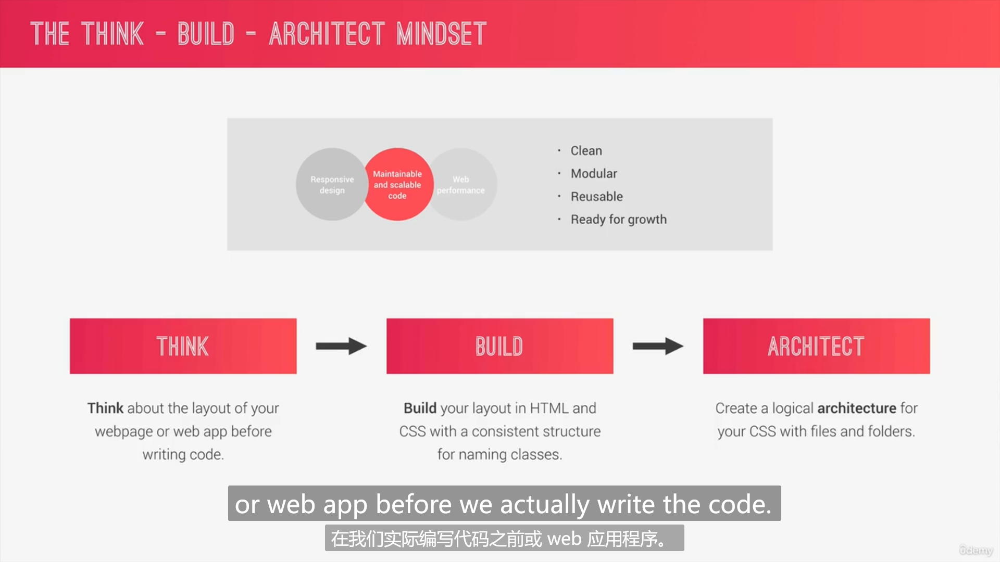
1 思考
- 组件驱动设计原则
- 考虑在页面中的位置
- 项目内/项目间复用
- 独立的组件
2 类的构建

3 文件组织
7+1
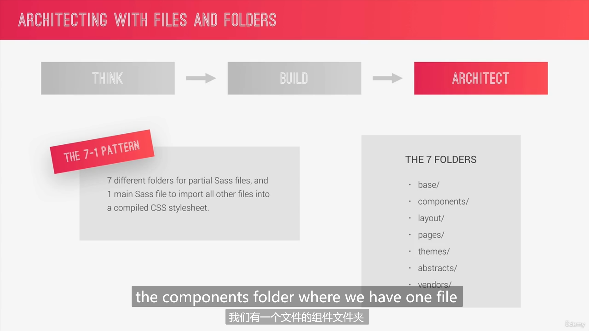
基本、组件、布局、页面样式、主题、？
实践BEM方法
SaSS
练习地址：
内容
变量、嵌套、运算、导入、混入、函数、拓展、控制语句
配置
安装
Sass中文网：https://sass.bootcss.com/guide
使用npm安装：
xxxxxxxxxx11npm install -g sass使用
最直接的方式就是在命令行中调用 sass 命令。安装 Sass 之后，你就可以用 sass 命令将 Sass 编译为 CSS 了。 首先你需要告诉 Sass 从哪个文件开始构建，以及将生成的 CSS 输出到哪里。 例如，在命令行中执行 sass input.scss output.css 命令， 将会把 Sass 文件 input.scss 编译输出为 output.css。
你还可以利用 --watch 参数来监视单个文件或目录。 --watch 参数告诉 Sass 监听源文件的变化， 并在每次保存 Sass 文件时重新编译为 CSS。如果你只是想监视 （而不是手动构建）input.scss 文件，你只需在 sass 命令后面添加 --watch 参数即可，如下：
xxxxxxxxxx11sass --watch input.scss output.css
可以使用文件夹路径作为输入和输出， 并使用冒号分隔它们，来监听文件并输出到目录。例如:
xxxxxxxxxx11sass --watch app/sass:public/stylesheets
Sass 将会监听 app/sass 目录下所有文件的变动，并 编译 CSS 到 public/stylesheets 目录下。
两种Sass语法
Sass（原始）语法：缩进敏感、不使用花括号和分号
SCSS语法：缩进不敏感、使用花括号和分号（保留原始CSS外观）
基本使用
变量
Sass内置颜色函数
tip:清除元素塌陷
嵌套
混入
xxxxxxxxxx81//混入2@mixin clearfix{3 &::after{4 content: "";5 clear:both;6 display: table;7 }8}使用混入
xxxxxxxxxx61nav{2 margin: 30px;3 background-color: $color-primary;4
5 @include clearfix;6}
传入参数
xxxxxxxxxx131@mixin link-text($color,$backcolor){2 &:link{3 padding: 10px;4 display: inline-block;5 text-align: center;6 border-radius: 100px;7 text-decoration: none;8 text-transform: uppercase;9 width: 10rem;10 color: $color;11 background-color: $backcolor;12 }13}使用混入
xxxxxxxxxx31a{2 @include link-text($color-text-dark,$color-secondary)3}
函数
内置函数
自定义函数
xxxxxxxxxx41//定义函数2@function divide($a,$b){3 @return $a/$b;4}加单位
xxxxxxxxxx11width: divide(60,2)*1px拓展
xxxxxxxxxx101//定义占位符2%btn-placeholder{3 padding: 10px;4 display: inline-block;5 text-align: center;6 border-radius: 100px;7 text-decoration: none;8 text-transform: uppercase;9 width: 10rem;10}
xxxxxxxxxx101&:link{2 // padding: 10px;3 // display: inline-block;4 // text-align: center;5 // border-radius: 100px;6 // text-decoration: none;7 // text-transform: uppercase;8 // width: 10rem;9 @extend %btn-placeholder;10 }
混入和拓展的区别
编译后，混入把代码带给选择器，拓展把选择器带给代码（占位符声明位置）
tip几种运算符小结
xxxxxxxxxx31& 复制当前的选择器2@3%
Sass文件结构化
abstracts
- _function.scss 函数
- _mixins_scss 混入
- _variables.scss 变量
base 全局可用
- _animation.scss 动画
- _base.scss 全局
- _typography.scss 排版
- _unilities.scss
components 组件
layout 布局
pages 页面
themy 主题
第三方
响应式设计
调整网页适应不同屏幕，在所有可能设备上显示
响应式设计四大原则
- fluid layouts 流动布局：内容适应窗口、使用相对单位（%、hv）、max-width
- 响应式单元：使用rem定义长度
- 灵活的图像：%和max-width
- 媒体查询：创建断点改变样式

流动布局
主流三种方法
Float Layouts（旧）, Flexbox（一维，现代）, CSS Grid（二维，现代）

浮动布局（旧）
网格系统
html
xxxxxxxxxx81<div class="row">2 <div class="col-1-of-2">3 Col 1 of 24 </div>5 <div class="col-1-of-2">6 Col 1 of 27 </div>8</div>css
xxxxxxxxxx181@mixin col-width($num,$total){2 width: calc(#{$num} * (100% - (#{$total} - 1) * #{$gutter-horizontal})/#{$total} + (#{$num} - 1) * #{$gutter-horizontal}) ;3}4
5[class^="col-"]{6 background-color: orange;7 float: left;8 &:not(:last-child){9 margin-right: $gutter-horizontal;10 }11}12
13.col-1-of-2{14 @include col-width(1, 2)15 }16.col-1-of-3{17 @include col-width(1, 3)18 }原生calc函数
xxxxxxxxxx31//width: calc(1 * (100% - 1 * #{$gutter-horizontal})/2);2//可以混合单位运算3//CSS函数，使用sass变量需要用哈希#{}属性选择器
xxxxxxxxxx41//使用属性选择器2 //[class="col-"]//等于3 //[class^="col-"]//开头4 //[class*="col-"]//包含伪类选择器not()当前是否结尾
xxxxxxxxxx31&:not(:last-child){//not伪类选择器2 margin-bottom: $gutter-vertical;3}
二级标题
xxxxxxxxxx161.heading-secondary{2 font-size: 3.5rem;3 text-transform: uppercase;4 font-weight: 700;5 display: inline-block;6 background-image: linear-gradient(to right,$color-primary,$color-primary-dark);7 background-clip: text;//剪裁背景到文本的颜色8 color: transparent;//透明颜色9 letter-spacing: 0.2rem;10 //margin: auto;11 transition: all .2s;//所有转换用时0.2s12 &:hover{13 transform: skewX(2deg) skewY(2deg) scale(1.2);14 text-shadow: .5rem 1rem 2rem rgba(rgba($color-primary-dark, 0.9),1.0);15 }16}
背景剪裁文本形状
xxxxxxxxxx21background-image: linear-gradient(to right,$color-primary,$color-primary-dark);2background-clip: text;//剪裁背景到文本的颜色转换和动画时间
xxxxxxxxxx11transition: all .2s;//所有转换用时0.2s盲文lorem
elemt快捷生成：lorem
回到网站
About Section
组件复用
相似类名的识别
xxxxxxxxxx51.xxx{2 &-1{//识别类名xxx-13 ...4 }5}utility
通过一个元素选择此类来获得属性
悬停放大
xxxxxxxxxx101.composition{2 &-photo{3 &:hover{4 outline: 1.5rem solid rgba($color-primary,0.6);5 transform: scale(1.3);6 box-shadow: 0 1.5 2 rgba($color-black,0.4);7 z-index: 20;8 }9 }10}悬停缩小其他图片
多个转换
轮廓偏移属性
选择NOT
xxxxxxxxxx341.composition{2 position: relative;3 &-photo{4 width: 55%;5 box-shadow: 0 1.5rem 4rem rgba($color-black,0.4);6 position:absolute;7 z-index: 10;8 transition: all .3s;9 border-radius: .2rem; 10 outline-offset: .4rem;11 &-p1{12 left:0; 13 top:-2rem;14 }15 &-p2{16 right: 0;17 top:4rem;18 }19 &-p3{20 left:20%;21 top:12rem;22 }23 &:hover{24 outline: 1.5rem solid rgba($color-primary,0.6);25 transform: scale(1.3);26 box-shadow: 0 1.5 2 rgba($color-black,0.4);27 z-index: 20;28 }29
30 }31 &:hover &-photo:not(:hover){32 transform: scale(0.9);33 }34}
Features Section图片列表
图标字体
下载网址：https://linea.io/
xxxxxxxxxx31<link rel="stylesheet" href="css/icon-font.css">2...3<i class="feature-box-icon icon-basic-world"></i>倾斜和子元素回正
xxxxxxxxxx61{2 transform: skewY(-7deg);3 & > *{4 transform: skewY(7deg)5 }6}
选择器：选择子一代
xxxxxxxxxx41transform: skewY(-7deg);2& > *{3 transform: skewY(7deg)4}
Tours Section旋转卡片
创建透视
xxxxxxxxxx41.card{2 perspective: 150rem;//创建透视3 perspective: 150rem;//适配火狐浏览器4}实现翻转
xxxxxxxxxx281.card{2 perspective: 150rem;//创建透视3 perspective: 150rem;//适配火狐浏览器4 position: relative;5 height: 50rem;6 //@include clearfix; 7 &-side{8 position: absolute;9 top: 0;10 left: 0;11 font-size: 2rem;12 height: 50rem;13 width: 100%;14 transition: all .8s ease;15 backface-visibility: hidden;//背面可见性16 box-shadow: $box-shadow-2;17 &-back{18 transform: rotateY(180deg);19 background-image: linear-gradient(to right bottom , $color-gold-light ,30%,$color-orange);20 }21 &:hover &front{22 transform: rotateY(-180deg);23 }24 &:hover &back{25 transform: rotateY(0deg);26 }27 }28}背面可见性
xxxxxxxxxx11backface-visibility: hidden;//背面可见性修复错误动画方向
注意负号：
- front: 0 => 180deg
- back: -180deg => 0
非透明背景的混合
背景混合模式
xxxxxxxxxx21background-blend-mode: screen;2background-image: linear-gradient(to right bottom ,$color-gold,$color-orange),url(../../img/nat-5.jpg);背景剪辑和适配浏览器
xxxxxxxxxx31background-clip: polygon(0 0, 100% 0, 100% 85%,0 100%);2background-clip: polygon(0 0, 100% 0, 100% 85%,0 100%);3clip-path: polygon(0 0, 100% 0, 100% 85%,0 100%);Stories Section评价列表
形状
文本围绕
xxxxxxxxxx91float: left;2position: relative;3//1.指定形状4shape-outside: circle(50% at 50% 50%);//必须指定宽高、必须浮动、必须加webkit-5shape-outside: circle(50% at 50% 50%);6//2.指定剪裁7//需要剪裁，不然形状变了，视觉背景还是方形8clip-path: circle(50% at 50% 50%);9transform: translateX(-3rem) skewX(12deg);形变与回正失效
xxxxxxxxxx71transform: skewX(-12deg);2// &>*{3// //因为目前的transform只能同时指定一次，下面的圆形指定了一次导致这里不生效4// transform: skewX(15deg);5// }6//transform: translateX(-3rem);7transform: translateX(-3rem) skewX(12deg);//只能在其他转换处一次性指定悬停覆盖内容
xxxxxxxxxx11<figcaption class="story-caption">Mary Smith</figcaption>图像过滤器 filter
xxxxxxxxxx41&:hover img{2 transform: scale(1.2);3 filter: blur(3px) brightness(80%);//模糊化、亮度降低4}视频背景
xxxxxxxxxx71<div class="bg-video">2 <video class="bg-video-content" autoplay muted loop>3 <source src="./img/video.mp4" type="video/mp4"/>4 <source src="./img/video.webm" type="video/webm"/>5 你的浏览器不支持视频背景！6 </video>7</div>xxxxxxxxxx141.bg-video{2 position: absolute;3 top: 0;4 left: 0;5 width: 100%;6 height: 100%;7 z-index: -1;//背景视频放到其他元素之后8 opacity: 0.2;9 &-content{10 height: 100%;11 width: 100%;12 object-fit: cover;//填充满父元素并保持纵横比13 }14}objectfit 适配图片比例
xxxxxxxxxx31height: 100%;2width: 100%;3object-fit: cover;//填充满父元素并保持纵横比Booking Section
纯色渐变代替简单剪裁
指定0、50%是白色，指定50%是其他颜色，就会在50%的位置产生边界
xxxxxxxxxx11background-image: linear-gradient(105deg,rgba($color-white,0.8) 0%,rgba($color-white,0.8) 50%, transparent 50%);
general, adjacent
文本输入框
xxxxxxxxxx141&-input{2 font-size: 1.5rem;3 padding: 1.5rem 2rem;4 border-radius: 2px;5 background-color: rgba($color-white,0.5);6 font-family: inherit;//input默认不继承字体7 color: inherit;//input默认不继承和文字有关的属性8 width: 35rem;9 display: block;10 transition: all .3s;11
12 border: none;13 border-bottom: 5px solid transparent;//透明的底部边框进行占位，以免出现跳动14}不合法输入的显示
xxxxxxxxxx81 &:focus{//选中时显示2 outline: none;//取消浏览器的默认蓝色边框3 box-shadow: 0 1rem 2rem rgba($color-black,0.1);4 border-bottom: 5px solid rgba($color-primary-dark,0.8);5 &:invalid{//不合法的输入6 border-bottom: 5px solid rgba($color-volcano,0.8);7 }8}修改placeholder样式、适配火狐
xxxxxxxxxx31&::input-placeholder,&::placeholder{2 color:$color-grey-dark;3}兄弟元素选择器
相邻兄弟选择器 +
相邻兄弟选择器 (+) 介于两个选择器之间，当第二个元素紧跟在第一个元素之后，并且两个元素都是属于同一个父 element 的子元素，则第二个元素将被选中。
https://developer.mozilla.org/zh-CN/docs/Web/CSS/Adjacent_sibling_combinator
通用兄弟选择器 ~
通用兄弟选择器（~）将两个选择器分开，并匹配第二个选择器的所有迭代元素，位置无须紧邻于第一个元素，只须有相同的父级元素。
https://developer.mozilla.org/zh-CN/docs/Web/CSS/General_sibling_combinator
实现placeholder移动
标签放在input下，平时通过位移+不透明度变换藏在input下面，input内有内容时，使用:placeholder-shown伪类和兄弟元素选择器选中
xxxxxxxxxx131&-label{2 font-size: 1.3rem;3 font-weight: 700;4 margin-left: 2rem;5 display: block;6 transition: all,0.2s;7}8&-input:placeholder-shown + &-label{//选择下一个相邻的兄弟9 opacity: 0;//因为hidden没有有动画10 visibility: hidden;11 transform: translateY(-3rem);12
13}
自定义radio按钮
radio不能设定样式。我们将input隐藏起来，通过label改变值，通过伪类选择器ckeck+兄弟选择器将样式显示在新的元素上
xxxxxxxxxx41&input{//隐藏原来的radio2 width: 0;3 opacity: 0;4}创建边框
创建一个内容空白，但是有边框的元素，并设置边框的圆角使其成为一个环形
xxxxxxxxxx101&-btn{2 display: inline-block;//使高度和宽度生效3 height: 3rem;4 width: 3rem;5 position: absolute;6 left: -0.6rem;7 top:-0.5rem;8 border: 4px solid rgba($color-primary,0.8);//边框9 border-radius: 50%;//边框变圆形10}创建伪元素显示选中状态
创建一个有背景色，圆角的伪元素，设置不透明度为0；radio被选中时使用兄弟元素选择器+伪类改变不透明度
xxxxxxxxxx141&::after{//伪元素，显示选中状态2 content: "";3 display: block;4 height: 1.3rem;5 width: 1.3rem;6 border-radius: 50%;//圆形7 position: absolute;8 top:50%;9 left: 50%;10 transform: translate(-50%,-50%);//定位到和文字等高11 background-image: linear-gradient($color-blue-light,$color-primary);12 opacity: 0;//未选中时不显示13 transition: opacity .3s;//不透明度渐变动画14}选中
xxxxxxxxxx31 &input:checked + &label &label-btn::after{//checked伪类+兄弟选择器2 opacity: 1;//显示为选中3}cursor属性设置光标
设置光标的类型（如果有），在鼠标指针悬停在元素上时显示相应样式。
MDN：https://developer.mozilla.org/zh-CN/docs/Web/CSS/cursor
代码
xxxxxxxxxx371&label{2 font-size: $default-font-size;3 cursor:pointer;//指针放在此元素上时会变成手4 position:relative;5 padding: 0 3rem;6 &-btn{7 display: inline-block;//使高度和宽度生效8 height: 3rem;9 width: 3rem;10 position: absolute;11 left: -0.6rem;12 top:-0.5rem;13 border: 4px solid rgba($color-primary,0.8);//边框14 border-radius: 50%;//边框变圆形15 &::after{//伪元素，显示选中状态16 content: "";17 display: block;18 height: 1.3rem;19 width: 1.3rem;20 border-radius: 50%;//圆形21 position: absolute;22 top:50%;23 left: 50%;24 transform: translate(-50%,-50%);//定位到和文字等高25 background-image: linear-gradient($color-blue-light,$color-primary);26 opacity: 0;//未选中时不显示27 transition: opacity .3s;//不透明度渐变动画28 }29 }30 }31 &input{//隐藏原来的radio32 width: 0;33 opacity: 0;34 }35 &input:checked + &label &label-btn::after{//checked伪类+兄弟选择器36 opacity: 1;//显示为选中37 }自定义普通按钮
由于a和button的可用伪类不同，使用为a元素创建的btn，btn-blue类时，需要在其中添加按钮拥有的伪类，以便按钮能被选择器正确地选中
xxxxxxxxxx51.btn {2 &,//link和visited不适用于button，所以添加此项选择按钮3 &:link,4 &:visited {}5}应用类css类
可以加! importent标签确保应用生效，因为选择应用类就是要把相应的属性添加上
页脚!!!!!!!!!!!!!!!!!!!!!!!!!!!!!!!!!!!!!!!!!!!!!!!!!!!!!!
导航
工作原理：checkbox hack
xxxxxxxxxx161<div class="navigation">2 <input type="checkbox" class="navigation-checkbox" id="navigation-toggle"/>3 <label for="navigation-toggle" class="navigation-button">4 <div class="navigation-icon"></div>5 </label>6 <div class="navigation-background">%nbsp;</div>7 <nav class="navigation-nav">8 <ul class="navigation-list">9 <li class="navigation-item"><a href="#" class="navigation-link"><span>1</span>About Natours</a></li>10 <li class="navigation-item"><a href="#" class="navigation-link"><span>2</span>Your benfits</a></li>11 <li class="navigation-item"><a href="#" class="navigation-link"><span>3</span>Popular tours</a></li>12 <li class="navigation-item"><a href="#" class="navigation-link"><span>4</span>Stories</a></li>13 <li class="navigation-item"><a href="#" class="navigation-link"><span>5</span>Book now</a></li>14 </ul>15 </nav>16 </div>1、隐藏的选择框
xxxxxxxxxx71.navigation{2 &-checkbox{3 width: 0;4 height: 0;5 position: absolute;6 opacity: 0;7 }2、按钮
xxxxxxxxxx151&-button{2 background-color: $color-white;3 height: 7rem;4 width: 7rem;5 position: fixed;6 top: 6rem;7 right: 6rem;8 border-radius: 50%;9 z-index: 200;10 box-shadow: $box-shadow-2;11 @include respond(phone){12 right: 3rem;13 top: 3rem;14 }15 }
3、背景
xxxxxxxxxx171&-background{2 height: 6rem;3 width: 6rem;4 border-radius: 50%;5 //background-color: orange;6 position: fixed;//和绝对定位类似，但是滚动页面时，和屏幕相对位置不变7 top:6.5rem;8 right: 6.5rem;9 background-image: radial-gradient($color-primary 20%, scale-color($color-blue-light,$lightness:80%));10 z-index: 100;11 transition: all .5s;12 //transform: scale(60);13 @include respond(phone){14 right: 3rem;15 top: 3rem;16 }17 }4、导航
xxxxxxxxxx491&-nav{2 height: 100vh;3 //width: 100vw;4 position: fixed;5 top: 0;6 left: 0;7 z-index: 150;8
9 opacity: 0;//不可见10 width: 0;//不可交互11 transition: all .5s;12 }13 &-list{14 position: absolute;15 top:50%;16 left: 50%;17 width: 100%;18 transform: translate(-50%,-50%);19 list-style: none;20 text-align: center;21 cursor: pointer;22 }23 &-item{24 margin: 1rem;25 }26 &-link{27 span{28 margin-right: 1rem;29 }30 &:link,&:visited{31 display: inline-block;//使位移生效32 font-size: 3rem;33 font-weight: 300;34 color: $color-white;35 text-decoration: none;36 text-transform: uppercase;37 padding: 1rem;38 background-image: linear-gradient(130deg,transparent 0%,transparent 50%,$color-white 50% );39 background-size: 300%;40 transition: all .4s;41 }42 43 &:hover,&:active{44 //background-image: linear-gradient(120deg,$color-orange 0%,$color-orange 100%,$color-white 100% );45 background-position: 100%;46 color: $color-primary;47 transform: translateX(1rem);48 } 49 }5、背景和导航切换
xxxxxxxxxx81&-checkbox:checked ~ &-nav{2 opacity: 1;3 width: 100vw;4 5 }6 &-checkbox:checked ~ &-background{7 transform: scale(70);8 }
6、按钮图标切换
xxxxxxxxxx451 //ICON2 &-icon{3 position:absolute;4 left: 50%;5 top:50%;6 transform: translate(-50%,-50%);7 &,&::before,&::after{8 content: "";9 width: 3rem;10 height: 2px;11 background-color: $color-grey-dark;12 display: inline-block;13 transition: all .2s;14 }15 &::before,&::after{16 content: "";17 position:absolute;18 left:0;19 }20 &::before{21 top:-1rem;22 //transform-origin: center;23 //改变旋转的中心点24 }25 &::after{26 top:1rem;27 }28 }29 &-button:hover &-icon::before{30 transform: translateY(-.2rem);31 }32 &-button:hover &-icon::after{33 transform: translateY(.2rem);34 }35 &-checkbox:checked ~ &-button &-icon::before{36 top:0;37 transform:rotateZ(45deg);38 }39 &-checkbox:checked ~ &-button &-icon::after{40 top:0;41 transform:rotateZ(-45deg);42 }43 &-checkbox:checked ~ &-button &-icon{44 height: 0;45 }渐变函数
https://developer.mozilla.org/zh-CN/docs/Web/CSS/gradient
类型：线性、径向、重复
线性渐变
颜色值沿着一条隐式的直线逐渐过渡。由linear-gradient()产生。
xxxxxxxxxx41.linear-gradient {2 background: linear-gradient(to right,3 red, orange, yellow, green, blue, indigo, violet);4}径向渐变
颜色值由一个中心点（原点）向外扩散并逐渐过渡到其他颜色值。由radial-gradient()函数产生。
xxxxxxxxxx31.radial-gradient {2 background: radial-gradient(red, yellow, rgb(30, 144, 255));3}重复渐变
重复多次渐变图案直到足够填满指定元素。由 repeating-linear-gradient() (en-US)和repeating-radial-gradient() (en-US)函数产生。
xxxxxxxxxx81.linear-repeat {2 background: repeating-linear-gradient(to top left,3 lightpink, lightpink 5px, white 5px, white 10px);4}5
6.radial-repeat {7 background: repeating-radial-gradient(powderblue, powderblue 8px, white 8px, white 16px);8}弹出窗口
使用target伪类，选中ID匹配网址哈希的块；
响应式设计
移动优先和桌面优先
选择桌面优先/移动优先，并为另外一个添加媒体查询断点
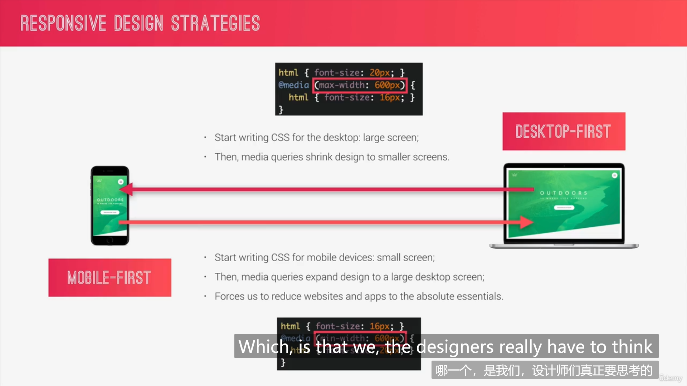
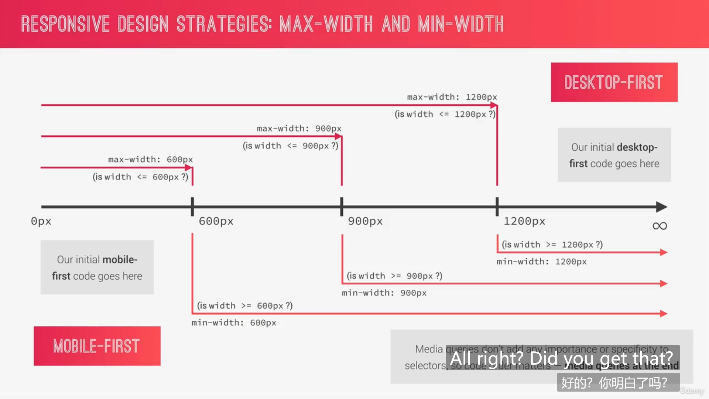
优缺点
移动优先
优点
- 移动体验好
- 优先考虑内容而不是设计
缺点
- 桌面端过于空洞
桌面优先
优点
- 桌面体验好
考虑的原则

断点的选择
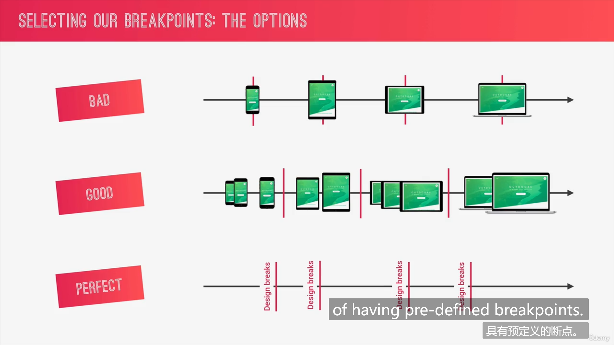
使用常用设备的宽度（Bad
将常用设备进行归类划分（Good
0-600px: Phone
600-900px: 平板（纵向）
900-1200px: 平板（横向）
1200-1800px:桌面
1800px+: 大屏幕
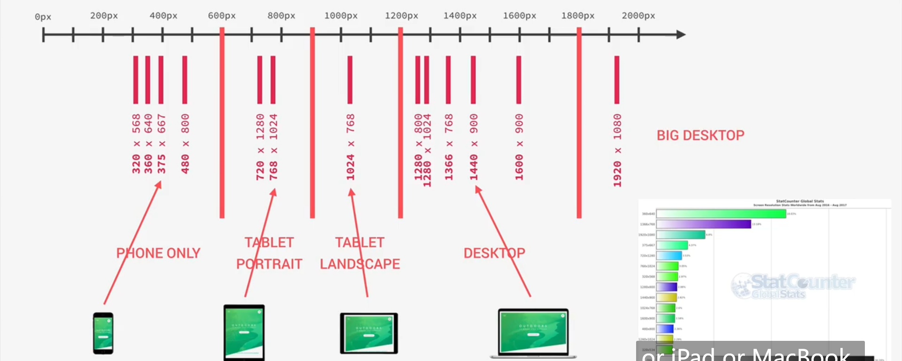
忽略设备，根据内容划分（Perfect
写法
CSS媒体查询
xxxxxxxxxx61html {2 font-size: 62.5%; /* 改成10px便于计算,或者%允许用户修改 */3 @media (min-width:600px) {4 font-size: 50%;5 }6}混入
xxxxxxxxxx51html {2 @include respond-phone{3 font-size: 50%;4 }5}xxxxxxxxxx71@mixin respond-phone {2 @media (min-width: 600px) {3 //用@content代表混入时写入混入体的内容4 @content;5 }6}7
带参数混入
xxxxxxxxxx81html {2 @include respond(phone){3 font-size: 50%;4 }5 @include respond(tab-port){}6 @include respond(tab-land){}7 @include respond(big-desktop){}8}xxxxxxxxxx141
2@mixin respond($breakpoint) {3 @if $breakpoint == phone {4 @media (min-width: 600px) {5 @content;6 }7 }8 @if $breakpoint == tab-port {9 @media (min-width: 900px) {10 @content;11 }12 }13}14
tips
使用相对单位
媒体查询中rem和em总是等于字体大小，不受根元素字体影响
摆放顺序问题
最后一个匹配的生效
考虑顺序
基础和排版，布局，页面，组件
基础
字体大小
排版
标题
布局
grid
细节
按钮、组件 等
响应式图像
为不同尺寸的设备下载不同尺寸的图片，减少不必要的网络负担
使用场景
- 屏幕尺寸
- 像素密度
- 艺术指导
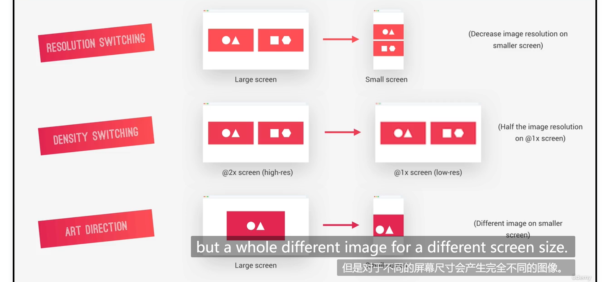
在HTML中响应
密度切换
img的src属性改成srcset，设置多个源
xxxxxxxxxx21<!-- <img src="./img/logo-green-2x.png" alt="Full logo" class="footer-logo"> -->2<img srcset="./img/logo-green-1x.png 1x , ./img/logo-green-2x.png 2x" alt="Full logo" class="footer-logo">艺术指导
使用picture 元素，用媒体匹配source，用img做默认显示
xxxxxxxxxx71<picture class="footer-logo-box">2 <source 3 srcset="./img/logo-green-1x.png 1x , ./img/logo-green-2x.png 2x"4 media="(max-width:37.5em)"5 > 6 <img srcset="./img/logo-green-1x.png 1x , ./img/logo-green-2x.png 2x" alt="Full logo" class="footer-logo">7</picture>使用尺寸选择
xxxxxxxxxx51<img srcset="img/nat-1.jpg 300w,img/nat-1-large.jpg 1000w"2 sizes="(max-width:900px) 20vw,(max-width:600px) 30vw"3 alt="composition-photo-p1" 4 class="composition-photo composition-photo-p1"5 src="img/nat-1-large.jpg">在CSS中响应
媒体查询宽度和分辨率
xxxxxxxxxx201background-image: linear-gradient(2 to right bottom,3 rgba($color-primary-light, 0.2),4 40%,5 rgba($color-primary-dark, 0.8)6),7url(../img/hero-small.jpg);8
9background-size: cover;10
11@media (min-resolution: 192dpi) and (min-width: 600px) {12 background-image: linear-gradient(13 to right bottom,14 rgba($color-primary-light, 0.2),15 40%,16 rgba($color-primary-dark, 0.8)17 ),18 url(../img/Alice.jpg);19}20
浏览器适配性检查
背景滤镜（谷歌不适用，Safari适用
xxxxxxxxxx21backdrop-filter:blur(10px);2backdrop-filter:blur(10px);特征查询
xxxxxxxxxx51@supports(backdrop-filter:blur(10px) or backdrop-filter:blur(10px)){2 //如果（）内的代码不支持，则此处的代码无效3 backdrop-filter:blur(10px);4 backdrop-filter:blur(10px);5}
调用构造流程
编译、串联、加前缀、压缩
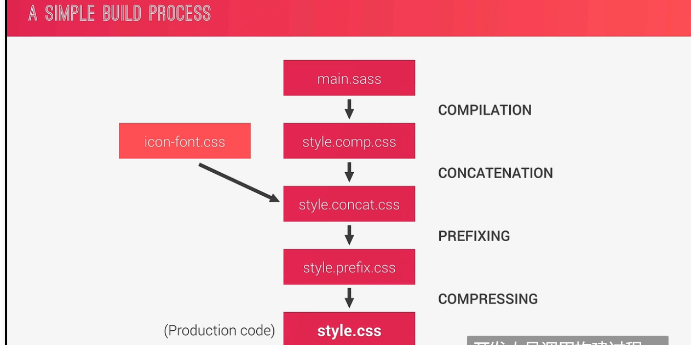
在npm中配置构建流程!!!!!!!!!!!!!!!!!!!!!

最后
改变选中文本效果

xxxxxxxxxx41::selection{2 background-color: $color-primary-light;3 color: $color-white;4}only屏幕显示
媒体查询条件only scree n（而不是打印）
网站根据屏幕宽度显示
（防止浏览器自动放到，导致响应式失效）
xxxxxxxxxx11<meta name="viewport" content="width=device-width, initial-scale=1.0">触控设备没法悬停
注意一些悬停效果不可用
识别触控设备
媒体查询条件：
xxxxxxxxxx21hover:none2hover:hover
第二部分
弹性盒子Flexbox